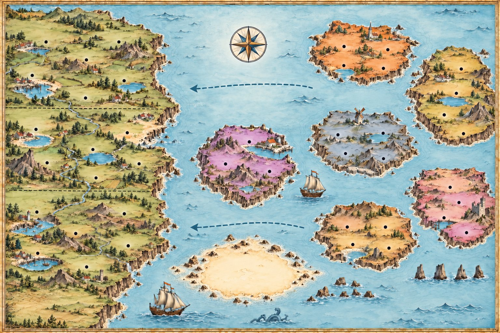

Regularia & Irregularia
One big tidy continent, and almost every verb in English lives on it: add -ed and you are done. Across the strait lies an archipelago of the verbs that are not regular. They do not break the rule at random. They come in families, and each family has its own island, named after the sound its verbs share. Learn the continent's three sounds, then sail the islands one at a time.
Read the chart![An illustrated sea chart. On the west, a large green continent, Regularia, divided into three provinces by the sound the -ed ending makes: -ed says /t/ (Stop Harbour, Walk Ridge, Laugh Rock), -ed says /d/ (Play Bay, Study Sands, Open Sound) and -ed says /id/ (Start Point, Wait Moor, Land's End). To the east, an archipelago called Irregularia: I A U Island (ring, rang, rung), Ought Island (buy, bought), -EW Island (blow, blew, blown), -T Island (keep, kept) and -EN Island (speak, spoke, spoken). In the strait lies Forked Isle (one verb, two meanings, two pasts) and, to the south, a sandbank called the Shallows, where learnt and learned are both correct. Two currents flow west: new verbs sail west, and some old ones are drifting west. In the south-east are the Still Rocks (cut, put, hit) and the Lone Stacks (go, be, do, see).](sailing-the-seas-regularia/hero.jpg)
Regularia: add -ed
Regularia is the biggest land on the chart because almost every verb lives there, including every verb invented this century. The rule is one rule. The six cards below are its spelling, and none of them changes the sound.
Add -ed
The rule for almost every verb in English, and for every new one: walk, play, call, open, visit.
Ends in -e? Just add -d
like → liked, live → lived, decide → decided. The e is already there.
Consonant + y becomes -ied
study → studied, carry → carried, try → tried. After a vowel the y stays: play → played, enjoy → enjoyed.
Short, stressed, one consonant: double it
stop → stopped, plan → planned, prefer → preferred. No double when the stress falls earlier: open → opened, visit → visited. Never double w, x or y: showed, fixed.
British English doubles the l
travel → travelled, cancel → cancelled. American English writes traveled, canceled. Both are correct; choose one and keep to it.
One form for everybody
The past does not change with the person: I, you, she, we, they walked. No -s, no exceptions. (Be is the only verb with two: was, were.)
The three provinces: what -ed sounds like
The spelling never changes, but the sound does, and the chart's three provinces are these three sounds. Only one of them adds a syllable.
| Sound | After | Say it |
|---|---|---|
| /t/ | a voiceless sound: p, k, s, sh, ch, f | stopped · walked · watched · cooked · liked · laughed |
| /d/ | a voiced sound (b, g, v, l, m, n, r) or any vowel | played · studied · travelled · called · lived · opened |
| /ɪd/ | t or d, and nothing else | started · waited · visited · needed · decided · landed |
The test: put a hand on your throat and say the last sound of the verb (not the last letter: like ends in /k/). If it buzzes, -ed says /d/; if it does not, /t/. Only after t or d does it make an extra syllable: walked is one syllable, never walk-ed.
Irregularia: no one rule, but families
About two hundred verbs never moved to the continent, and they are the ones you use every day: old, short and common. But they did not scatter. They live in families that share a sound, and each family has an island. Learn one verb on an island and you have a model for the rest of it.
I · A · U Island
The vowel walks from i to a to u: sing sang sung, drink drank drunk, swim swam swum, begin began begun.
Ought Island
Past and participle both end in the sound -ought, sometimes spelled -aught: bring brought, think thought, catch caught, teach taught, buy bought.
-EW Island
The past ends in -ew and the participle in -own: blow blew blown, grow grew grown, know knew known, throw threw thrown, fly flew flown.
-T Island
A -t appears, often with a shorter vowel, and both forms are the same: keep kept, sleep slept, feel felt, leave left, build built.
-EN Island
The third form ends in -en: speak spoke spoken, break broke broken, take took taken, give gave given, write wrote written.
The Still Rocks
Verbs that never change, in any form: cut, put, hit, let, cost, set, shut, hurt. Nearly all of them end in -t.
Three forms, island by island
The third column is the past participle, the form that follows have and makes the passive (I have sung, it was broken). On some islands it is a different word from the past; on others it is the same.
| Island | Base · past · participle | More verbs that live there |
|---|---|---|
| I·A·U | sing · sang · sung | ring, drink, swim, begin, sink, shrink |
| Ought | buy · bought · bought | bring, think, fight, catch, teach, seek |
| -EW | blow · blew · blown | grow, know, throw, fly, and draw (drew, drawn) |
| -T | keep · kept · kept | sleep, feel, leave, build, send, spend, lend, mean |
| -EN | speak · spoke · spoken | break, take, give, write, choose, steal, forget, eat |
| Still Rocks | cut · cut · cut | put, hit, let, cost, set, shut, hurt, quit |
The Lone Stacks, and others to learn alone
These belong to no family. They are also the commonest verbs in the language, which is why they kept their odd shapes: words used every day resist being smoothed out.
| Verb | Past | Participle |
|---|---|---|
| go | went | gone |
| be | was · were | been |
| do | did | done |
| see | saw | seen |
| have | had | had |
| make | made | made |
| say | said | said |
| get | got | got (British) · gotten (American) |
| come | came | come |
Read the chart
Click a landmass and its list lights up below. Every harbour is named after a verb. Switch the chart to just the verbs to see them bare, then to the past forms to see what each one becomes. Notice that on Regularia the past forms all look alike, while each island has its own pattern.

Drag the chart sideways to reach the islands.
Regularia · verb + -ed
The strait · two pasts
Irregularia · families
When did carries the past
Every verb on the chart, regular or irregular, behaves the same way in a question or a negative: did takes the past, and the main verb goes back to its base form, as if nothing had happened to it. The past is marked once, never twice.
The past is marked once
If you can see did, the verb after it is bare.
| Not this | This | |
|---|---|---|
| Negative | We didn't went home. | We didn't go home. |
| Question | Did you saw the lighthouse? | Did you see the lighthouse? |
| Question | Did the engine stopped? | Did the engine stop? |
| Short answer | Yes, I did went. | Yes, I did. |
| Wh- question | Where did they found it? | Where did they find it? |
Be is the exception. It never uses did. You ask Were you there? and answer I wasn't; Did you be there? is not English.
Did you go? · Were you there?
After have: the third form
On Regularia, Ought Island, -T Island and the Still Rocks, the past and the participle are the same word, so nothing can go wrong. On I·A·U, -EW and -EN and on the Lone Stacks they are different, and have takes the third one.
| Where | Past simple | After have |
|---|---|---|
| I·A·U | We sang. | We have sung. Never have sang. |
| -EW | It grew. | It has grown. |
| -EN | She took it. | She has taken it. |
| Lone Stacks | They went. | They have gone. Never have went. |
| Regularia | I waited. | I have waited. The same word. |
Forked Isle: one verb, two meanings, two pasts
Three verbs on the chart have two meanings, and each meaning has kept its own past. Choosing the wrong one does not just sound odd: it says something else.
| Verb | One meaning | The other |
|---|---|---|
| lie | say something untrue → lied He lied about the weather. | be flat, rest → lay, lain She lay on the deck in the sun. |
| hang | kill with a rope → hanged Pirates were hanged at the port. | everything else → hung We hung the lanterns on the mast. |
| shine | polish (mostly American) → shined He shined his boots. | give out light → shone The moon shone on the water. |
And the rock beside the island: lay is also a separate verb, lay → laid, meaning put something down. I lay down is the past of lie; I laid the map down is the past of lay.
Where both forms are right
South of the strait the water shoals. Here a handful of verbs have two past forms, an old one in -t and a newer one in -ed, and both are correct and mean the same thing. They are drifting west: the -ed form is slowly winning, and in American English it has already won.
The verbs in the Shallows
Both columns are right. British English uses both; American English uses the -ed form almost always.
| Verb | The old form | The newer form |
|---|---|---|
| learn | learnt | learned |
| dream | dreamt | dreamed |
| burn | burnt | burned |
| spell | spelt | spelled |
| lean | leant | leaned |
| smell | smelt | smelled |
| spill | spilt | spilled |
| spoil | spoilt | spoiled |
One place the old form holds on: before a noun, as an adjective. Burnt toast, a spoilt child, spilt milk sound natural even to speakers who would say burned and spoiled as verbs.
The toast burned. · I hate burnt toast.
Not every current runs west
A few verbs are drifting the other way, from regular to irregular, mostly in American English. Worth recognising; there is no need to use them.
| Verb | Regular | The newer irregular |
|---|---|---|
| dive | dived | dove (American) |
| sneak | sneaked | snuck (informal) |
| fit | fitted | fit (American) |
Signal words
Sail west — add -ed
- almost every verb in the language
- every new verb: texted, emailed, googled, zoomed
- verbs made from nouns: parked, phoned, emailed
- long verbs: discovered, remembered, organised
- verbs borrowed from other languages
- any rare verb whose past you have never heard
Make for the islands — learn by family
- the verbs you hear every day: go, get, make, take, come
- -ing and -ink verbs: often I·A·U (but bring and think sail to Ought)
- -eep, -eel, -end verbs: often -T
- short -ow verbs: often -EW (show is half: showed, shown)
- short -t verbs: often the Still Rocks
- and the four Lone Stacks: go, be, do, see
One line to keep: a verb you have never met before is almost certainly regular. The irregular ones are old, short and common, so you meet them early and often. The islands are where the everyday verbs live.